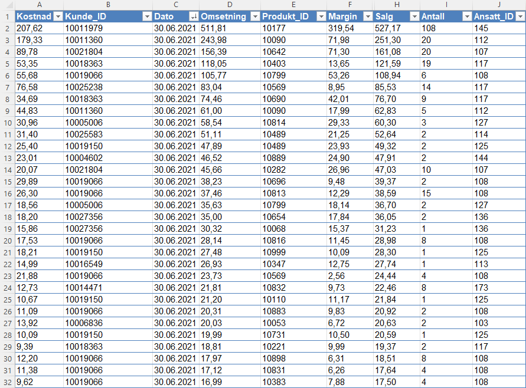

Prosjekt: Iskald
Introduksjon
Én av de ledende business intelligence-lønsningene på det norske markedet er Qlik Sense, en programvare utviklet av svenske Qlik. For å teste det ut "startet" jeg et virtuelt iskremselskap som kjører rundt til bedrifter og i boligområder og selger iskrem og andre fryste produkter. Denne dataen satte jeg opp i 5 Excel-tabeller med data på salg, produkter, kunder, ansatte og markeder (geografiske områder). Denne dataen lastet jeg inn i Qlik Sense, som automatisk koblet tabellene sammen.

Dashboard
For å visualisere dataen jeg lastet inn laget jeg et enkelt dashboard på én side. Alle filterne plasserte jeg til venstre slik at man kan filtrere dataen på periode, geografisk område og lag/ansatt. Man kan også enkelt filtrere ved å klikke på de ulike elementene i diagrammene. Dette dashboardet inneholder KPI-er på salg, kostnader, fortjeneste, antall transaksjoner og gjennomsnittlig salgsverdi. Deretter laget jeg kake/donutdiagrammer for å vise til de ulike produktkategoriene og stolpediagrammer for å visualisere de største produktene og (bedrifts)kundene målt i salg. Jeg satte også opp et distribusjonsdiagram på salg per produkt delt inn i endelige produktkategorier (produktkategori 3) for å vise til spredeningen i salget. Jeg ville også ha med en kartfunksjon som viser til hvor vi opererer, nemlig sør- og østlandet. Til slutt laget jeg en linjediagram for å vise trenden over hele perioden (Q1 2019 til Q6 2021). Denne viser tydelige topper på sommermånedene og ingen data i månedene november-februar, noe som forklarer seg selv.
Konklusjon
Mitt inntrykk av Qlik Sense er at det er et forståelig og fleksibelt verktøy som er enkelt å ta i bruk. Bruken av measures er enkelt og rett fram og jeg liker at det finnes en søkknapp for raskt å finne spesifikk data. Sammenlignet med Power Bi er det veldig brukervennlig, ettersom Power BI krever en viss brukerkunnskap av Microsoft-verktøy, spesielt Excel. Mulighetene i Power BI fikk jeg inntrykk av at er litt flere enn i Qlik Sense, spesielt når det gjelder estetikk. Men alt i alt virker dette som et aldeles bra BI-verktøy.